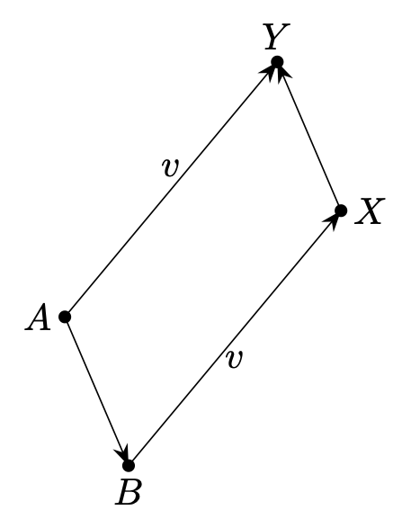

% %
%\[ \DeclarePairedDelimiters{\set}{\{}{\}} \DeclareMathOperator*{\argmax}{argmax} \]
곡선과 표면은 일반적으로 점들(points)로 구성된 공간에 존재하는 특별한 속성을 가진 점들의 집합으로 간주된다. 일반적으로 translations, rotations, projections 등과 같은 특정 변환 하에서 불변하는 기하학적 특성이 중요하다. 점으로 이루어진 공간을 소위 벡터 공간으로 모델링할 수 있지만 이는 여러 가지 이유로 그다지 만족스럽지 않다. 한 가지 중요한 이유는 원점이라고 불리는 영벡터에 해당하는 점이 실제로 특권을 가질 이유가 없음에도 특별한 역할을 하기 때문이다. 또 다른 이유는 parallelism 과 같은 특정 개념이 어색한 방식으로 처리된다는 것이다. 그러나 더 중요 한 이유는 벡터 공간과 아핀 공간이 실제로 다른 기하학적 구조를 가지고 있다는 것이다. 벡터 공간의 기하학적 속성은 동형사상에 대해 불변인 반면, 아핀 공간의 기하학적 속성은 전단사 아핀 사상 그룹에서 불변하며 이 두 그룹은 동형이 아니다. 대략적으로 말하면 선형 맵보다 아핀 맵이 더 많다.
아핀 공간은 기하학을 수행하기 위한 더 나은 틀을 제공한다. 특히 점, 곡선, 표면 등을 본질적인 방식, 즉 특정 좌표계의 선택과 관계없이 처리하는 것이 가능하다. 물리학에서와 마찬가지로 이것은 실제로 무슨 일이 일어나고 있는지 이해하는 데 매우 바람하다. 물론 최종적으로 계산을 수행하려면 좌표계를 선택해야 하지만 실제로 필요할 때까지는 좌표계에 의존하려는 유혹을 물리치는 법을 배워야 한다. 아핀 공간은 무엇보다도 움직임, 궤적, 물리적 힘을 다루는 데 적합하다. 따라서 아핀 기하학은 운동학, 역학 및 기타 물리학 부분(예: 탄성)을 깔끔하게 표현하는 데 매우 중요하게 된다.
1.1 아핀 공간의 정의와 성질
1.1.1 아핀 공간의 정의와 기본적 성질
벡터를 다룰 때 벡터 공간을 정의하는 것처럼 아핀 공간을 정의하자. 아핀 공간은 어떤 벡터 공간에 대해 정의하는 것이 가장 깔끔하다. 아핀 공간에 대해 여러가지 동등한 정의가 존재하지만 다음의 정의를 따른다.

명제 1.1 \(\Theta(A, A)=\overrightarrow{AA}=\overrightarrow{0}\) 이다. 또한 \(\overrightarrow{AB}=-\overrightarrow{BA}\) 이다.
(증명). \(A=B=C\) 라 놓으면 \(\overrightarrow{AA}=\overrightarrow{0}\) 임을 보일 수 있다. \(\overrightarrow{AB}+\overrightarrow{BC}=\overrightarrow{AC}\) 에서 \(C=A\) 로 놓으면 \(\overrightarrow{AB}+\overrightarrow{BA}= \overrightarrow{AA}=\overrightarrow{0}\) 이므로 \(\overrightarrow{AB}= - \overrightarrow{BA}\) 이다. \(\square\)
명제 1.2 아핀 공간 \(\mathcal{E}(E,\,\Theta)\) 와 임의의 \(A\in \mathcal{E}\) 에 대해 \(\Theta_A(\mathcal{E})=E\) 이다.
(증명). 정의 1.1 의 (\(1\)). \(\square\)
명제 1.3 아핀 공간 \(\mathcal{E}(E,\,\Theta)\) 에 대해 \(X\in \mathcal{E}\) 일 필요충분조건은 임의의 \(A\in \mathcal{E}\) 에 대해 \(\overrightarrow{AX}\in E\) 인 것이다.
(증명). \(X\in \mathcal{E}\) 라면 임의의 \(A\in \mathcal{E}\) 에 대해 \(\Theta_A(X)=\overrightarrow{AX} \in E\) 이다. \(A\in \mathcal{E}\) 에 대해 \(\overrightarrow{AX}=\Theta_A(X)\in E\) 라면 \(\Theta_A\) 는 전단사이므로 \(X\in \mathcal{E}\) 이다. \(\square\)
이제 아핀 공간을 이해하기 위해 몇가지 예를 들어 보자.
보기 1.1 공집합은 임의의 벡터 공간에 대해 아핀 공간이며 차원이 없는 것으로 간주한다.
보기 1.2 (벡터 공간의 아핀 구조) 벡터공간 \(V\) 에 \(\theta : V \times V \to V\) 를 \(\theta(u,\,v) := v-u\) 로 정의하면 \(V(V,\,\theta)\) 는 아핀공간임을 보이자.
(\(1\)) 정해진 \(u\) 에 대해 \(\theta_u(v)=\theta(u,\,v)\) 라고 하면 \(\theta_u\) 는 전단사이며,
(\(2\)) \(\theta(u,\,v) + \theta(v,\,w) = v-u + w-v = \theta(u,\,w)\) 이다.
즉 \(V(V,\,\theta)\) 는 아핀공간이며 모든 벡터 공간에는 자연스러운 아핀 구조가 내재되어 있으며 벡터 공간 자체를 아핀 공간으로 간주 할 수 있다.
보기 1.3 벡터 공간 \(E_1,\,E_2\) 에 대한 아핀 공간 \(\mathcal{E}_1 (E_1,\,\Theta_1),\,\mathcal{E}_2 (E_2,\,\Theta_2)\) 를 생각하자. 데카르트곱 \(E_1 \times E_2\) 은 벡터 공간이며 여기에 \(\Theta : (\mathcal{E}_1 \times \mathcal{E}_2) \times (\mathcal{E}_1 \times \mathcal{E}_2) \to E_1 \times E_2\) 를
\[ \Theta ((A, B),\, (C,\,D)) = (\Theta_1(A, B),\, \Theta_2(C,\,D)) \]
로 정의한다면 \((\mathcal{E}_1 \times \mathcal{E}_2) (E_1 \times E_2,\, \Theta)\) 는 아핀 공간이다.
명제 1.4 (평행사변형 규칙) 아핀 공간 \(\mathcal{E}\) 와 \(A,\,B,\,C,\,D\in \mathcal{E}\) 에 대해 다음이 성립한다.
\[ \overrightarrow{AB}=\overrightarrow{DC} \iff \overrightarrow{AD}=\overrightarrow{BC}. \tag{1.1}\]
여기서 각각의 등식이 성립하는 사각형 \(AA'B'B\) 를 평행사면형(paralleogram) 이라고 한다.
(증명).
\(\overrightarrow{AB}=\overrightarrow{DC}\) 이라면
\[ \overrightarrow{AD}=\overrightarrow{AB}+\overrightarrow{BC}+\overrightarrow{CD} = \overrightarrow{DC} +\overrightarrow{BC}+\overrightarrow{CD} = \overrightarrow{BC} \]
이다. 같은 방식으로 역을 증명 할 수 있다. \(\square\)
명제 1.5 아핀 공간 \(\mathcal{E}(E, \Theta)\) 에 대해 \(A\in \mathcal{E},\, u\in E\) 일 때 \(\overrightarrow{AB}=u\) 를 만족하는 \(B\in \mathcal{E}\) 가 유일하게 존재한다. 이 때 \(B=A+u\) 라고 쓴다.
(증명). see 연습문제 1.7.
1.1.2 아핀 공간의 벡터 공간화와 아핀 부분공간
명제 1.2 를 생각하자. 정해진 \(A\in \mathcal{E}\) 에 대해 \(\Theta_A(\mathcal{E})=E\) 인 벡터 공간이다.
보기 1.2 에서 보았듯이 벡터 공간 \(E\) 에 대해 자연스러운 아핀 구조가 존재한다. 그러나 이 아핀 공간에 대한 벡터 공간화는 원점이 되는 벡터의 선택에 따라 무수히 많기 때문에 아핀 공간에 대한 자연스러운 벡터 구조는 존재하지 않는다.
우리는 선형대수학에서 벡터 부분공간을 정의했다. 여기서는 아핀 부분공간을 정의하기로 하자.
보기 1.1 에서 보았듯이 공집합이라면 자명한 아핀 공간이기 때문에 더이상 고려할 것이 없다. 이제 공집합이 아닌 경우를 살펴 보자.
보조정리 1.1 \(\mathcal{F}\) 가 아핀 공간 \(\mathcal{E}(E,\,\Theta)\) 의 부분집합이며, 어떤 \(A\in \mathcal{F}\) 에 대해 \(F=\Theta_A(\mathcal{F})\) 가 \(E\) 의 벡터 부분공간이라면 임의의 \(B\in \mathcal{F}\) 에 대해서도 \(\Theta_B(\mathcal{F})=F\) 이다.
(증명). 임의의 \(X\in \mathcal{F}\) 에 대해 \(\overrightarrow{AX}\in F\) 이다. \(\overrightarrow{BX}= \overrightarrow{BA} +\overrightarrow{AX}\) 이며 \(\overrightarrow{BA},\, \overrightarrow{AX}\in F\) 이고 \(F\) 가 벡터 공간이므로 \(\overrightarrow{BX}\in F\) 이다. 즉 \(\Theta_B(\mathcal{F}) \subset F\) 이다. 임의의 \(v\in \Theta_A(\mathcal{F})\) 에 대해 \(\overrightarrow{AY}=v\) 인 \(Y\in \mathcal{F}\) 가 존재한다. \(B\in \mathcal{F}\) 이므로 \(\overrightarrow{AB}\in F\) 이며 \(F\) 가 벡터 공간이므로 \(\overrightarrow{AB}+\overrightarrow{AY}\in F=\Theta_A(\mathcal{F})\) 이다. 즉 \(\overrightarrow{AB}+\overrightarrow{AY} = \overrightarrow{AX}\) 인 \(X\in \mathcal{F}\) 가 존재한다.

\[ \overrightarrow{BX} = \overrightarrow{BA}+\overrightarrow{AY}+\overrightarrow{YX}= -\overrightarrow{AX}+\overrightarrow{AY}+\overrightarrow{AY} + \overrightarrow{YA}+\overrightarrow{AX} = \overrightarrow{AY} = v \]
이므로 \(v\in \Theta_B(\mathcal{F})\) 이다. 즉 \(F\subset \Theta_B(\mathcal{F})\) 이며 앞의 결과와 함께 \(\Theta_B(\mathcal{F})=F\) 이다. \(\square\)
즉 보조정리 1.1 에 의하면 일단 한 \(A\in \mathcal{E}\) 에 대해 \(F=\Theta_A(\mathcal{F})\) 가 벡터 공간이면 모든 \(X\in \mathcal{F}\) 에 대해 \(\Theta_X(\mathcal{F}) = F\) 므로 정의에 의해 \(\mathcal{F}\) 는 아핀 공간이다. 이를 정리하면 다음과 같다.
정리 1.1 아핀 공간 \(\mathcal{E}(E,\,\Theta)\) 에 대해 \(\mathcal{F}\subset\mathcal{E}\) 일 때, 어떤 \(A\in \mathcal{F}\) 에 대해 \(\Theta_A(\mathcal{F})\) 가 \(E\) 의 벡터 부분공간이면 \(\mathcal{F}(\Theta_A(\mathcal{F}),\,\Theta)\) 는 \(\mathcal{E}\) 의 아핀 부분공간이다.
아핀 공간의 부분집합으로부터 아핀부분집합이 되는 성질을 보였다. 이제 아핀 공간에 내재된 벡터 공간의 벡터 부분공간으로부터 아핀 부분공간을 구성하는 것을 알아보자.
정리 1.2 아핀 공간 \(\mathcal{E}(E,\,\Theta)\) 에 대해 \(F\) 가 \(E\) 의 벡터 부분공간이며 \(A\in \mathcal{E}\) 일 때, \(F\) 를 내포하며 \(A\) 를 지나는 아핀 부분공간이 유일하게 존재한다.
(증명). \(\mathcal{F}\subset \mathcal{E}\) 를 다음과 같이 정하면 \(\mathcal{F}\) 는 \(F\) 를 내포하며 \(A\) 를 지나는 \(\mathcal{E}\) 의 아핀 부분공간이다.
\[ \mathcal{F} := \left\{X\in \mathcal{E} : \overrightarrow{AX}\in F\right\}. \]
이제 \(\mathcal{F}'(F,\,\Theta)\) 이 \(A\) 를 지나는 아핀 공간이라고 하자. \(Y\in \mathcal{F}'\) 이면 \(\overrightarrow{AY}\in F\) 이며 따라서 \(Y\in \mathcal{F}\) 이다. \(X\in \mathcal{F}\) 이면 \(\overrightarrow{AX}\in F\) 이며 따라서 \(X\in \mathcal{F}'\) 이다. 즉 \(\mathcal{F}=\mathcal{F}'\) 이다. \(\square\)
보기 1.4 모든 아핀 공간 \(\mathcal{E}\) 의 점은 그 자체로 아핀 부분공간이다. 즉 아핀 공간의 0차원 부분공간은 점이다. \(0\) 차원 벡터 공간은 영벡터로만 이루어진 벡터 공간이며, 따라서 영벡터에 해당하는 한 점으로만 이루어진 아핀 공간이다.
명제 1.6 벡터 공간 \(F\) 에 대해 \(f:E\to F\) 가 선형사상이라고 하자. 이 때 \(v\in f(E)\) 에 대해 \(f^{-1}(\{v\})\) 는 \(\ker (f)\) 가 내재된 \(E\) 의 아핀 부분공간이다.
(증명). 벡터 공간에 내재된 아핀 공간에 대해서는 보기 1.2 를 참고하라. 정해진 \(v\in f(E)\) 에 대해 \(E'=f^{-1}(\{v\})\) 을 생각하자. 그리고 \(\theta:E'\times E' \to E\) 를 \(\theta(x,\,y) := y-x\) 로 정의하자. 정해진 \(x\in E'\) 에 대해 \(\theta_x:E' \to E\) 를 \(\theta_x(y):=\theta(x,\,y)\) 라고 하면, \(\theta_x(E')= \ker (f)\) 이며 치역을 \(\ker (E)\) 로 제한한 \(\Theta : E' \times E' \to \ker (f)\), \(\Theta_u(v)= v-u\) 는 전단사이며, \(\Theta\) 는 샬 관계를 만족한다는 것을 보일 수 있다. 즉 \(f^{-1}(\{v\})(\ker (f),\, \Theta)\) 는 \(E\) 의 아핀 부분공간이다. \(\square\)
보기 1.5 (선형 시스템과 아핀 공간) 선형 시스템 \(A\boldsymbol{x}=\boldsymbol{b}\) 의 해는 벡터 공간은 아니지만 아핀 공간이다. \(V=\{\boldsymbol{x}: A\boldsymbol{x}=\boldsymbol{0}\}\) 는 벡터 공간이며 이 벡터 공간을 내포하는 아핀 공간이다. 또한 벡터 공간 \(E\) 의 벡터 부분공간 \(F\) 와 \(u_0\in E\) 에 대해 \(F+u_0=\{f+u_0:f\in F\}\) 역시 \(F\) 를 내포하는 아핀 부분공간이다.
1.1.3 아핀 공간의 집합적 성질
명제 1.7 아핀 부분공간의 교집합은 아핀 부분공간이다.
(증명). 아핀 공간 \(\mathcal{E}\) 의 부분공간으로 이루어진 집합족 \(\{\mathcal{F}_i\}_{i \in I}\) 에 대해 \(\mathcal{F}=\bigcap_{i\in I} \mathcal{F}_i\) 라고 하자. \(\mathcal{F}=\varnothing\) 일 경우는 자명하므로 공집합이 아닐 경우만 생각하자. \(F_i\) 를 \(\mathcal{F}_i\) 에 내재된 벡터 공간이라고 하면 \(F=\bigcap_{i\in I}F_i\) 는 \(E\) 의 벡터 부분공간이며 따라서 정해진 \(A\in \mathcal{F}\) 를 포함하며 \(F\) 를 내포하는 아핀 부분공간이 정해진다.
이로부터 다음 명제는 자명하다.
명제 1.8 \(S\) 가 \(\mathcal{E}\) 의 부분집합일 때 \(S\) 를 포함하는 모든 아핀 부분공간의 교집합은 \(S\) 를 포함하는 가장 작은 아핀 부분공간이다.
명제 1.9 \(S=\{A_0,\ldots,\,A_k\} \subset \mathcal{E}(E,\,\Theta)\) 일 때 \(\langle S\rangle\) 은 \(\{\overrightarrow{A_0A_1},\ldots,\,\overrightarrow{A_0A_k}\}\) 에 의해 전개(span) 되는 벡터 공간을 내포한다. 이 경우 \(\langle S\rangle\) 의 차원은 \(k\) 보다 같거나 작다.
(증명). 벡터공간 \(F=\text{span}\left(\overrightarrow{A_0A_1},\ldots,\,\overrightarrow{A_0A_k}\right)\) 를 내포하며 \(A_0\) 를 지나는 아핀 공간이 \(\langle S \rangle\) 임을 보이자. \(F\) 가 \(E\) 의 부분공간임은 자명하며 정리 1.2 에 의해 \(F\) 를 내포하고 \(A_0\) 를 지나는 유일한 아핀공간 \(\mathcal{F}(F,\,\Theta)\) 가 존재한다. \(A_0,\ldots,\,A_k\in \mathcal{F}\) 이므로 \(\langle S \rangle \subset \mathcal{F}\) 이다. 이제 \(X\in \mathcal{F}\) 일 때 \(\overrightarrow{A_0X} \in F\) 는 \(S\) 를 포함하는 모든 아핀 공간에 포함되므로 \(X\in \langle S\rangle\) 이다. 즉 \(\mathcal{F}\subset \langle S\rangle\) 이다. 따라서 \(\mathcal{F}= \langle S\rangle\) 이다. \(\dim(F) \le k\) 이므로 \(\langle S\rangle\) 의 차원은 \(k\) 보다 작거나 같다.\(\square\)
아핀 공간의 합집합일 경우는 연습문제 1.3 를 보라. 벡터 공간에서의 중요 성질인 선형독립과 같이 아핀 공간에서도 어떤 성분의 독립적 성질이 존재한다.
명제 1.10 정의 1.6 에서 \(\{A_0,\ldots,\,A_k\}\) 가 아핀 독립일 필요충분조건은 \(\{\overrightarrow{A_0A_1},\ldots,\,\overrightarrow{A_0A_k}\}\) 가 선형독립인 것이다.
(증명). \(\{A_0,\ldots,\,A_k\}\) 가 아핀 독립 \(\iff \text{span}\left(\overrightarrow{A_0A_1},\ldots,\,\overrightarrow{A_0A_k}\right)\) 이 \(k\) 차원 벡터공간 \(\iff \{\overrightarrow{A_0A_1},\ldots,\,\overrightarrow{A_0A_k}\}\) 가 선형독립. \(\square\)
보기 1.6 직선에 대한 아핀 틀은 서로 다른 두 점이다(연습문제 1.2). 따라서 아핀 공간 \(\mathcal{E}\) 와 \(A,\,B\in \mathcal{E}\) 에 대해 \(\langle A,\,B\rangle\) 은 \(A,\,B\) 를 잇는 직선이다.
보기 1.7 \(k+1\) 개의 점이 독립일 필요충분조건은 각각의 점이 그 점을 제외한 다른 점들로 전개되는 부분공간에 포함되지 않는 것이다.(연습문제 1.5)
1.1.4 아핀공간의 평행
두 아핀 부분공간의 교집합이 공집합이더라도 평행하지 않을 수 있다. 위의 정의에 의하면 3차원 공간에서 서로 만나지 않는 직선과 평면은 위의 정의에 의하면 평행하지 않다. 반대로 평면상에서 서로 만나지 않는 두 직선은 평행하다.
보기 1.8 명제 1.6 를 보라. 벡터공간 \(E,\,F\) 에서의 선형사상 \(f:E \to F\) 를 생각하자. 각각의 \(v\in \text{im}(f)\) 에 대해 \(f^{-1}(\{v\})\) 는 모두 \(\ker (f)\) 를 내포하는 평행하는 아핀부분공간이다.
명제 1.11 두 아핀 부분공간 \(\mathcal{F},\,\mathcal{G}\) 가 평행하다면 같거나 서로소이다.
(증명). \(A\in \mathcal{F}\cap \mathcal{G}\) 라고 하자. \(E\) 가 \(\mathcal{F},\,\mathcal{G}\) 에 공통으로 내포된 벡터공간이라고 하면 정리 1.2 에 의해 이 벡터공간은 유일하다. 따라서 \(\mathcal{F}=\mathcal{G}\) 이다. \(\square\)
정리 1.3 (평행선 공리) 주어진 직선과 평행하며 정해진 점을 지나는 직선은 하나 뿐이다.
(증명). \(A\) 를 지나며 1차원 공간 \(D\) 를 내포하는 직선은 정리 1.2 에 따라 하나 뿐이다.
보조정리 1.2 \(\mathcal{F},\,\mathcal{G}\) 가 아핀 공간 \(\mathcal{E}(E,\,\Theta)\) 의 부분공간이며 각각 내포하는 벡터공간이 \(F,\,G\) 라고 하자. \(A\in \mathcal{F},\, B\in \mathcal{G}\) 일 때 다음이 성립한다.
\[ \mathcal{F}\cap \mathcal{G} \ne \varnothing\iff \overrightarrow{AB}\in F+G \]
(증명). (\(\implies\)) \(X\in\mathcal{F}\cap \mathcal{G}\) 이면 \(\overrightarrow{AX} \in F,\, \overrightarrow{BX}\in G\) 이다. 따라서 \(\overrightarrow{AB}=\overrightarrow{AX}-\overrightarrow{BX} \in F+G\) 이다.
(\(\impliedby\)) \(\overrightarrow{AB}\in F+G\) 이면 어떤 \(u\in F,\, v\in G\) 에 대해 \(\overrightarrow{AB}=u+v\) 이다. \(u=\overrightarrow{AX}\) 가 되는 \(X\in \mathcal{F}\) 에 대해 \(\overrightarrow{AB} = \overrightarrow{AX} +\overrightarrow{XB}\) 이므로 \(v=\overrightarrow{XB}\in G\) 이며 따라서 \(X\in \mathcal{G}\) 이다. 즉 \(\mathcal{F}\cap \mathcal{G} \ne \varnothing\) 이다. \(\square\)
정리 1.4 \(\mathcal{F},\, \mathcal{G}\) 가 아핀 공간 \(\mathcal{E}(E,\,\Theta)\) 의 부분공간이며, 각각이 내포하는 벡터공간을 \(F,\,G\) 라고 하자. \(E=F+G\) 이면 \(\mathcal{G}\) 와 평행한 아핀 부분공간은 \(\mathcal{F}\) 와의 교집합이 공집합이 아니다.
(증명). \(A\in \mathcal{F},\,B\in \mathcal{E}\) 이고 \(\mathcal{G}'\) 이 \(\mathcal{G}\) 와 평행한 아핀 부분공간이라고 하자. \(\overrightarrow{AB} \in E =F+G\) 이면 보조정리 1.2 에 따라 \(\mathcal{F}\cap \mathcal{G}'\ne \varnothing\) 이다. \(\square\)
1.2 아핀 사상
1.2.1 아핀 사상
아핀 공간이 벡터공간과 함수와 같이 정의되듯이 아핀사상은 원점과 선형사상과 함께 정의된다.
명제 1.12 아핀 사상 \(\varphi\) 의 선형 사상 \(f\) 는 원점 \(O\) 의 선택과는 무관하다. 즉 다른 원점 \(O'\) 에 대해
\[ \overrightarrow{\varphi}(\overrightarrow{O'X}) = \overrightarrow{\varphi(O')\varphi(X)} \]
이다.
(증명). \(\overrightarrow{\varphi}\) 는 선형사상이므로 \(\overrightarrow{\varphi}(\overrightarrow{AB}) + \overrightarrow{\varphi}(\overrightarrow{AC})= \overrightarrow{\varphi}(\overrightarrow{BC})\) 임을 이용한다. \[ \begin{aligned} \overrightarrow{\varphi(O')\varphi(X)} &= \overrightarrow{\varphi(O')\varphi(O)} + \overrightarrow{\varphi(O)\varphi(X)} = \overrightarrow{\varphi}(\overrightarrow{O'O}) + \overrightarrow{\varphi}(\overrightarrow{OX}) = \overrightarrow{\varphi}(\overrightarrow{O'X}). \qquad \square \end{aligned} \]
연습문제
연습문제 1.1 (Audin 1.1) 평행사변형의 두 대각선은 서로 중점에서 만난다는 것을 보여라.
(해답). 명제 1.4 를 보자. 평행사변형 \(ABCD\) 에서 \(\overrightarrow{AC}\) 의 중점을 \(M\), \(\overrightarrow{BD}\) 의 중점을 \(M'\) 이라고 하자. 즉 \(\overrightarrow{AM}= \dfrac{1}{2}\overrightarrow{AC}\) 이며 \(\overrightarrow{BM'}= \dfrac{1}{2}\overrightarrow{BD}\) 이다.
\[ \begin{aligned} \overrightarrow{MM'} &= \overrightarrow{MA}+ \overrightarrow{AM'} = -\overrightarrow{AM} + \overrightarrow{AB} + \overrightarrow{BM'} \\[0.3em] &= - \dfrac{1}{2} \overrightarrow{AC} + \overrightarrow{AB} + \dfrac{1}{2}\overrightarrow{BD} = \dfrac{1}{2}\overrightarrow{CB} + \dfrac{1}{2}\overrightarrow{AD} = 0 \end{aligned} \]
연습문제 1.2 (Audin 1.3) 아핀 공간상의 두 점을 지나는 직선은 유일하다는 것을 증명하라.
(해답). 아핀 공간 \(\mathcal{E}(E,\,\Theta)\) 상의 두 점 \(A,\,B\in \mathcal{E}\) 를 포함하는 1차원 아핀 부분공간 \(\mathcal{F}\) 를 생각하자. \(\Theta_A(\mathcal{F})\) 가 1차원 벡터 공간이며 \(B\in \mathcal{F}\) 이므로 \(\Theta_A(\mathcal{F})\) 는 \(\overrightarrow{AB}\) 로 스팬되는 벡터 공간으로 유일하게 정해진다. 따라서 아핀 공간상의 \(A,\,B\) 를 지나는 직선은 유일하다.
연습문제 1.3 (Audin 1.4) \(\mathcal{F}_1,\,\mathcal{F}_2\) 는 아핀 공간 \(\mathcal{E}\) 의 두 아핀 부분공간이다. 어떤 조건에서 \(\mathcal{F}_1 \cup \mathcal{F}_2\) 가 아핀 부분공간이 되는가?
(해답). \(F_1,\,F_2\) 를 각각 \(\mathcal{F}_1,\,\mathcal{F}_2\) 에 내재하는 벡터 공간이라고 하자. 우리는 두 벡터 공간의 합집합이 벡터 공간일 필요충분조건은 두 벡터 공간중 하나가 다른 하나의 부분공간일 때라는 것을 안다. 따라서 한 아핀 공간이 다른 아핀 공간의 부분아핀 공간이어야 한다는 조건이 생기며 이 경우 두 아핀 공간의 합집합은 당연히 아핀 공간이다.
연습문제 1.4 (Audin 1.5) 아핀 공간의 부분집합 \(\mathcal{F}\) 가 아핀 부분공간일 필요충분조건은 임의의 \(A,\,B\in \mathcal{F}\) 에 대해 \(\langle A,\,B\rangle \subset \mathcal{F}\) 인 것임을 보여라.
(해답). 아핀 공간 \(\mathcal{E}=\mathcal{E}(E,\,\Theta)\) 에 대해 \(\mathcal{F}\subset\mathcal{E}\) 라고 하자.
(\(\implies\)) \(\mathcal{F}\) 가 \(\mathcal{E}\) 의 아핀 부분공간이고 \(A,\,B\in \mathcal{F}\) 이며 \(\langle A,\,B\rangle\) 은 \(A,\,B\) 를 포함하는 모든 부분공간의 교집합이므로 \(\langle A,\,B\rangle \subset \mathcal{F}\) 이다.
(\(\impliedby\)) 임의의 \(A,\,B\in \mathcal{F}\) 에 대해 \(\langle A,\,B\rangle \subset \mathcal{F}\) 임을 가정하자. 임의의 \(A\in \mathcal{E}\) 에 대해 \(F=\Theta_A(\mathcal{F})\) 라고 하자. \(\overrightarrow{0}=\overrightarrow{AA}\in F\) 이며 임의의 \(X\in \mathcal{F}\) 에 대해 \(X\in \langle A,\,B\rangle\) 이므로 \(-\overrightarrow{AX}\in F\) 이다. 따라서 \(F\) 가 벡터 공간이며, 정리 1.2 에 의해 \(\mathcal{F}\) 는 \(\mathcal{E}\) 의 부분공간이다.
연습문제 1.5 (Audin 1.6) 아핀 공간상의 점 \(\{A_0,\ldots,\,A_k\}\) 가 아핀 독립일 필요충분조건은 모든 \(i\in \{0,\ldots,\,k\}\) 에 대해
\[ A_i \not\in \langle A_0,\ldots,\,A_{i-1},\,A_{i+1},\ldots,\,A_k\rangle \]
임을 보여라.
(해답). 명제 1.3 로부터
\[ \begin{aligned} X\in \langle A_0,\ldots,\,A_k\rangle &\iff \overrightarrow{A_0X} \in \text{span}\left(\overrightarrow{A_0A_1},\ldots,\,\overrightarrow{A_0A_k}\right) \\ &\iff \{\overrightarrow{A_0A_1},\ldots,\,\overrightarrow{A_0A_k},\, \overrightarrow{AX}\}\text{ 는 선형 종속} \\ &\iff \{A_0,\ldots,\,A_k,\,X\} \text{ 는 아핀 독립이 아님.} \end{aligned} \]
임을 안다.
연습문제 1.6 (Audin 1.7) 아핀 공간상의 점 \(\{A_0,\ldots,\,A_k\}\) 가 아핀 독립일 필요충분조건은 모든 \(i\in \{0,\ldots,\,k\}\) 에 대해
\[ A_i \not\in \langle A_0,\ldots,\,A_{i-1}\rangle \]
임을 보여라.
(해답). (\(\implies\)) \(i<k\) 에 대해 \(\langle A_0,\ldots,\,A_{i}\rangle\) 은 \(\langle A_0,\ldots,\,A_k\rangle\) 의 아핀부분공간이므로 연습문제 1.5 에 따라 성립한다.
(\(\impliedby\)) \(A_k \not\in \langle A_0,\,\ldots,\,A_{k-1}\rangle\) 이므로 \(\{A_0,\ldots,\,A_k\}\) 는 아핀 독립이다.
연습문제 1.7 (Audin 1.47) 아핀 공간 \(\mathcal{E}(E,\,\Theta)\) 를 생각하자. 함수 \(\phi:E\times \mathcal{E} \to \mathcal{E}\) 를 다음과 같이 정의한다.
\[ \phi(M,\, u) = M+u \]
이 때 \(M'=\phi(M,\,u)\) 일 때 \(\overrightarrow{MM'}= u\) 이다.